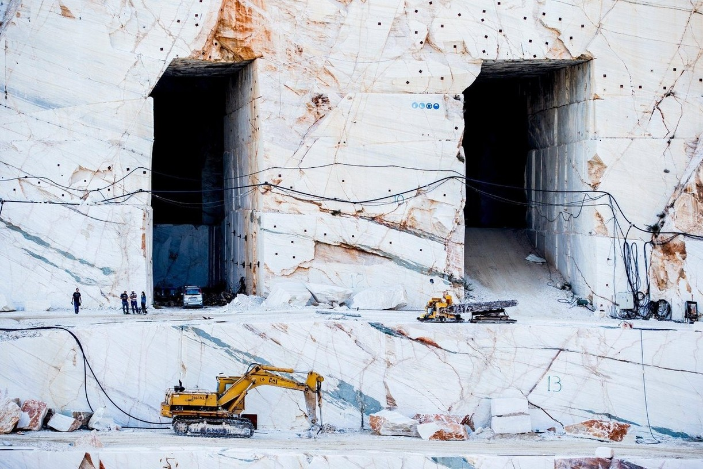

Marble is a metamorphic rock composed of recrystallized carbonate minerals, most commonly calcite or dolomite. Marble is typically not foliated, although there are exceptions. In geology, the term marble refers to metamorphosed limestone, but its use in stonemasonry more broadly encompasses unmetamorphosed limestone.[1] Marble is commonly used for sculpture and as a building material.
